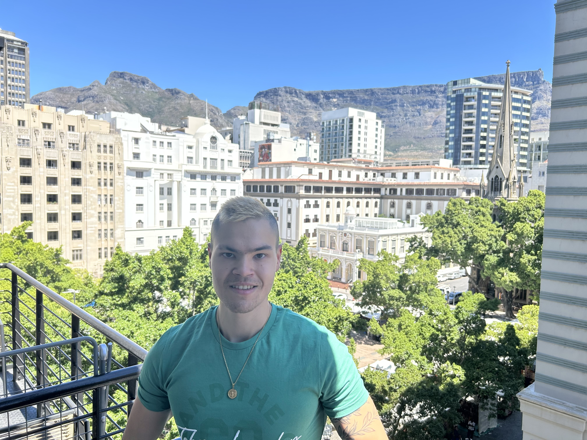
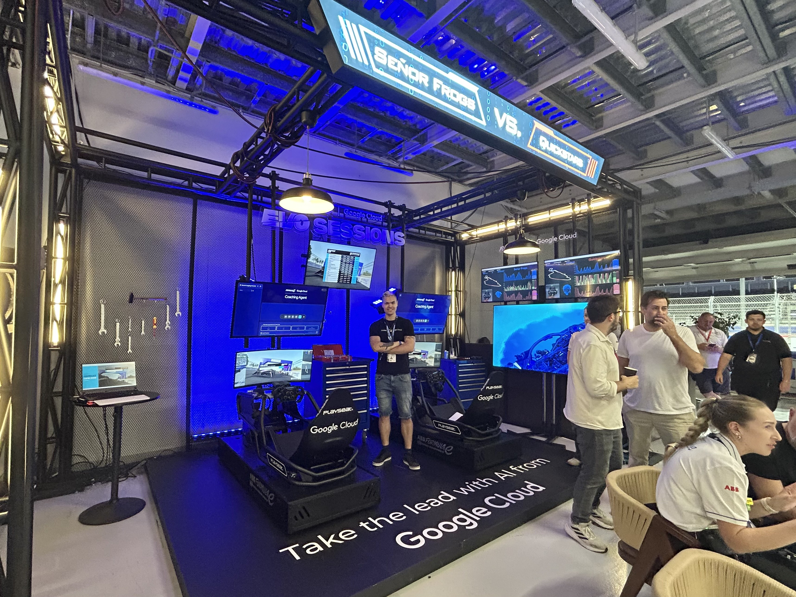
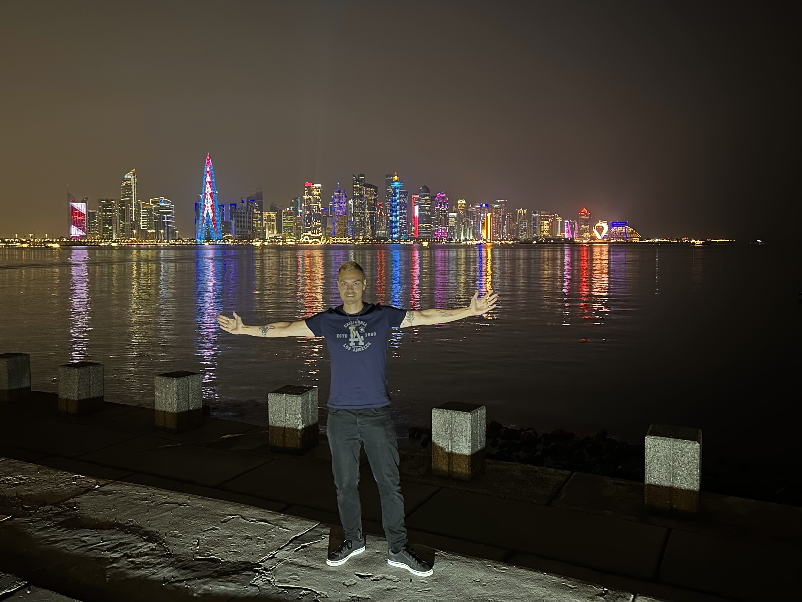
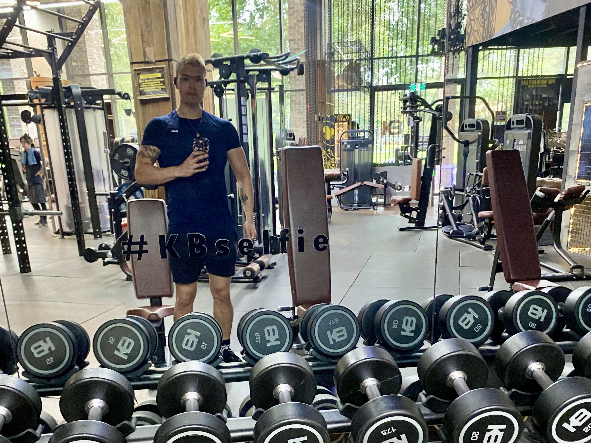

About me

Hi, I'm Reks. I'm a Program Manager at Google Cloud by trade, and also a keen traveler, fitness guru and software/AI enthuiast.
I was born in Belgrade, Serbia in 2002, before growing up in New York and London. Having completed my A levels and a Degree in Marketing, I then joined Google on their apprenticeship program in London and have been working there since 2023.
Work🧑💻

I've spent 3 years working at Google Cloud, largely maintaining my core focus and roles & responsibilites from when I first started as an apprentice.
As a Program Manager, I work as part of the Marketing team but in a technical capacity, helping to build and exhibit demos and programs that showcase the capabilities of Google Cloud Platform for businesses and developers.
This helps to lift perception, mindshare and adoption of our core product, especially with regards to AI/ML. Though it is a marketing role, it is highly technical, and it allows me to explore and embrace my passion for technology & software development to drive business value.
Travel✈️

At the age of 23, I have visited over 60 countries including solo-traveling 31. Whilst I believe traveling should help you to switch off from work and your daily routine, the typical "relaxing" vacation is not for me. Instead I believe, that vacations are for exploring new places, cultures, attractions & food. My key travel highlights are as follows:
- Best Food: Milan, Italy🇮🇹 and New York, USA🇺🇸
- Best Music: EXIT festival at Novi Sad, Serbia🇷🇸
- Best Wildlife: Queensland, Australia🇦🇺
- Best Skyline: Hong Kong🇭🇰 and Doha, Qatar🇶🇦
- Best History: Berlin, Germany🇩🇪
- Best Scenery: Bled, Slovenia🇸🇮 and Cape Town, South Africa🇿🇦
Gym💪

I'm an avid gym-goer, having lost over 30kg in my late teens and going 5 days a week. My current routine looks like this:
- Monday & Thursday: Upper Body - Chest, Arms & Shoulders
- Tuesday & Friday: Lower Body & Back - Back, Legs and Calves
- Wednesday & Sunday: Rest but active rest - each day I do minimum 10k steps
- Saturday: Cardio & Abs - 45 minute inline walk & ab exercises
I'm also relatively strict on nutrition, mostly home cooking meals, keeping protein intake around 180g per day, and through high quality sources such as Greek Yoghurt, Eggs, Fish & Lamb.